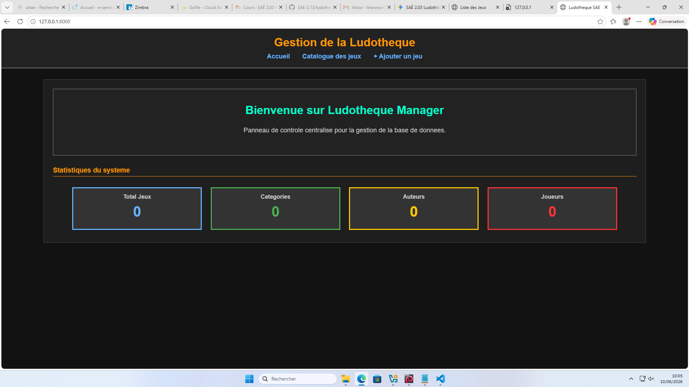
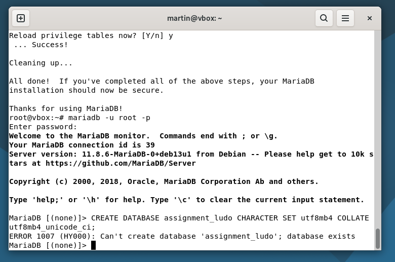
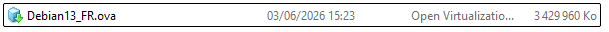
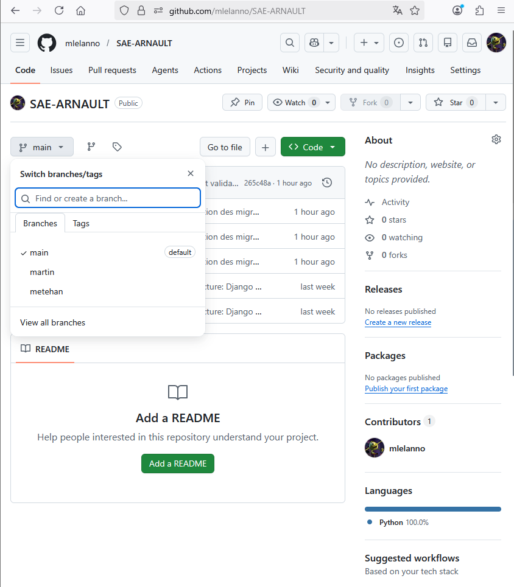

Système d'Information "Ludothèque"
Le Concept : Nous avons construit de A à Z le "cerveau" numérique d'une entreprise de location de jeux de société. Plus qu'un simple site vitrine, l'objectif était de livrer une véritable application web dynamique, robuste et sécurisée. Voici l'interface finale, conçue pour permettre aux gérants de piloter facilement leur base de données :

1. L'Architecture Logicielle (Django MVT)
Pour éviter le code "plat" et difficile à maintenir, nous avons utilisé l'architecture Modèle-Vue-Template du framework Django :
- Le Modèle (L'Architecte) : Dicte la structure stricte des données en base.
- La Vue (Le Cerveau) : Orchestre la logique métier et la sécurité des requêtes.
- Le Template (La Décoration) : L'interface visuelle isolée du moteur.
Cette séparation chirurgicale nous a permis de générer des interfaces CRUD (Création, Lecture, Mise à jour, Suppression) de manière très structurée, avec une arborescence de fichiers claire et modulaire :

2. L'Architecture Hybride (Bases de Données)
Pour parer à la dérive de configuration ("ça marchait sur mon PC"), le système adapte son moteur de données à son environnement : en phase de développement local, il s'appuie sur la légèreté de SQLite3. Une fois en production, le code bascule automatiquement sur la puissance de MariaDB, que nous avons initialisé et sécurisé directement en ligne de commande :

3. Déploiement : La Chaîne Logistique (CI/CD)
La mise en ligne a été pensée comme une infrastructure réseau complète. Nous avons abandonné les transferts manuels au profit d'un pipeline professionnel. Le code est développé en collaboration sur GitHub, puis déployé sur une machine virtuelle Debian dédiée :


Le pont entre notre code et le serveur s'effectue via un tunnel SSH sécurisé. La mise à jour de l'application en production se fait par un simple rapatriement (clone/pull) de notre dépôt Git, garantissant une traçabilité absolue de chaque modification :


4. La Forteresse : Sécurité Intégrée
Exposer une base de données clients sur internet exige des verrous stricts. La sécurité a été implémentée by design :
- Neutralisation des Injections SQL : L'ORM de Django traduit et filtre systématiquement les requêtes entrantes, rendant les tentatives d'injections inopérantes.
- Jetons CSRF : L'application exige un ticket cryptographique à usage unique pour chaque soumission de formulaire, bloquant toute falsification inter-sites.
- Isolation des Secrets : Les identifiants MariaDB et clés de chiffrement sont stockés dans un fichier
.envlocalisé exclusivement sur le serveur, évitant toute fuite d'informations sur GitHub.